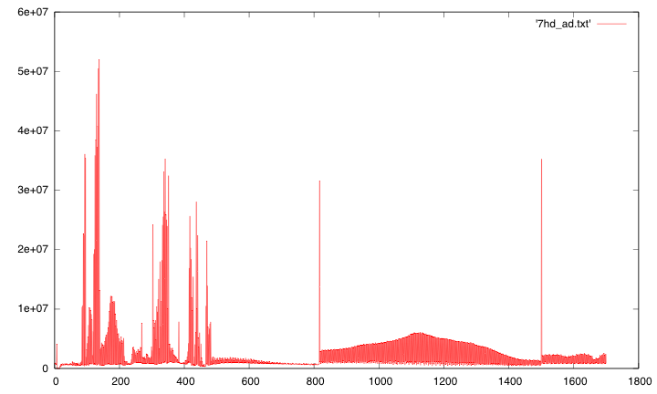

Currently only produces a text file (which can be graphed by gnuplot) of the average lightness of the sourceframes. The idea is that there is a black fade before and after advertisements. To produce chapter markers for DVDs from TV.

From looking at this above graph it appears that this program is doing a frame difference, rather than averaging luma. Which is the same function as yuvdiff. Now we can quite easily see scene changes, shown as sharp spikes. At about 810 and 1500
We can also tell that the video has gone through a frame rate doubling by frame dupliation. Shown by the high frequency component.
I should move this image down to YUV diff